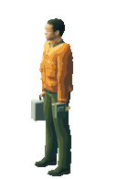
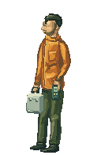
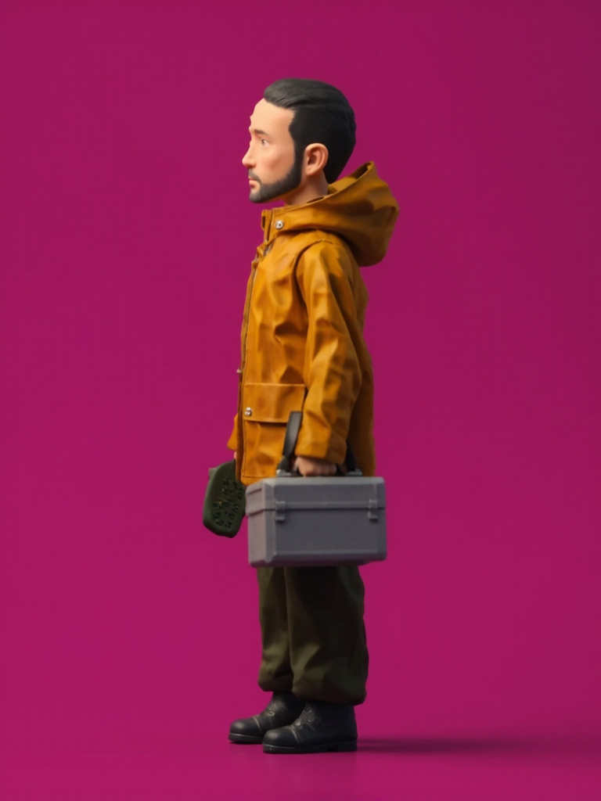

原野中的记录者
一张完整的侧面像素人物。
从空白栅格绘制头颈、衣装、四肢与器物，按同一种色块语言完成整个人。制作方式是程序辅助的二维像素绘制；本页提供原画、三维辅稿和实际输出供比较。
先看实际尺寸
均为 128 × 196 画布，按原生像素显示。原画与辅稿人物高 174px，新试片高 176px；未局部缩放头或肢体。



原画与新稿 · 整数倍检查
桌面 3 倍、小屏 2 倍。看完整轮廓、面部朝向、颈肩、衣褶和手部接触。
目前的判断
这一版有了统一的二维轮廓和像素色块，面部与器物朝向也能直接控制。与原画相比，人物面貌、布料层次和衣褶仍偏概括，尚未定稿。下一步是否值得扩为动作，应由这张完整人物的观感决定。
- 制作方式
- 明确坐标与颜色的像素簇笔触，程序负责落笔和保存。不是人工手绘或模型生成结果，也未将旧图的头、腿或纹理拼接到新图。
- 可编辑源
- OpenRaster 图层文件可用于支持该格式的绘图软件；另保留完整笔触与色板。图层是绘制组织，不是已经验证的动画绑定。
- 当前范围
- 一个方向、一个完整站姿。没有新增步态、视频或正式首页替换。

本轮 MMX 试验：1 张，未采用
使用三维母版作人物参考的生成结果仍偏光滑三维，增加了兜帽、改变了胡须与比例，并交换了器物所在的一侧，因此淘汰。本轮未继续追加同类请求。
